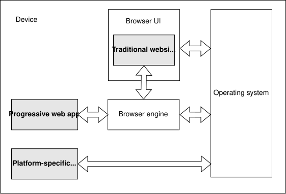
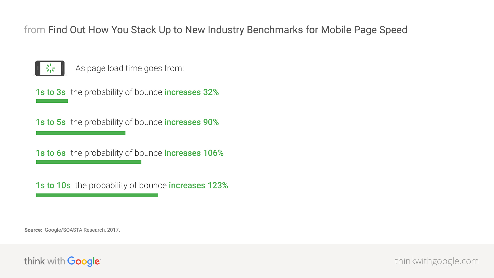
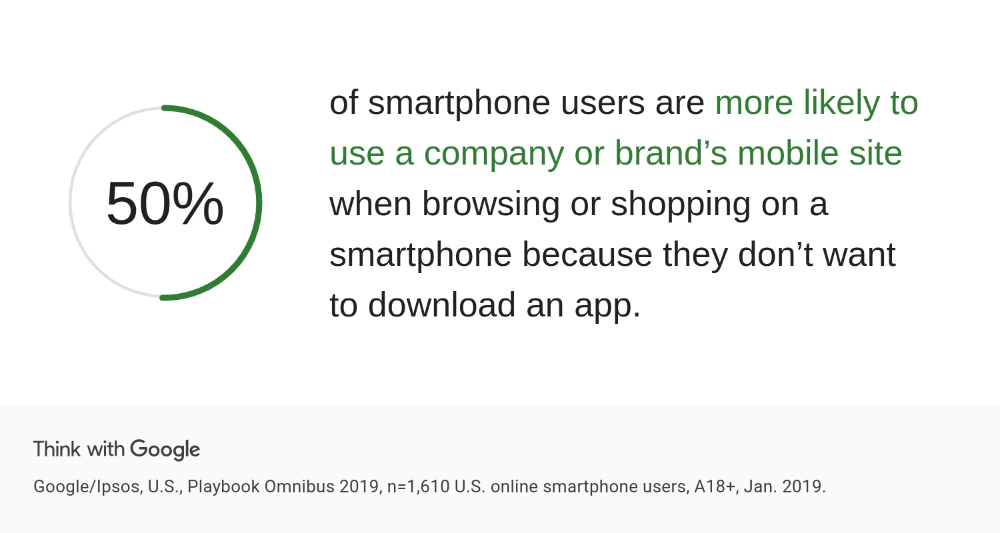
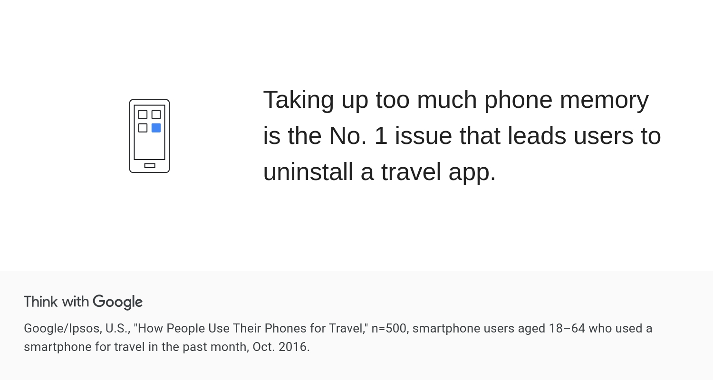
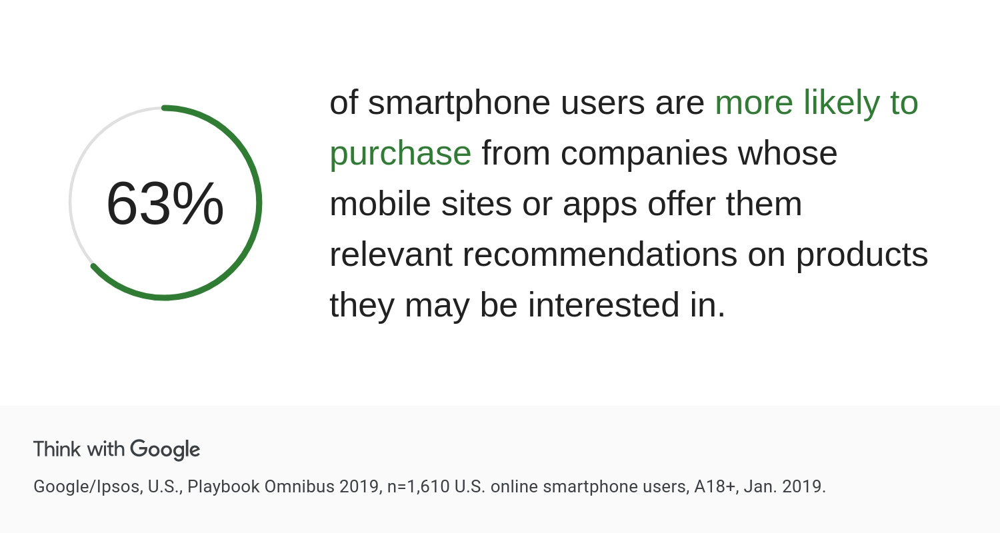
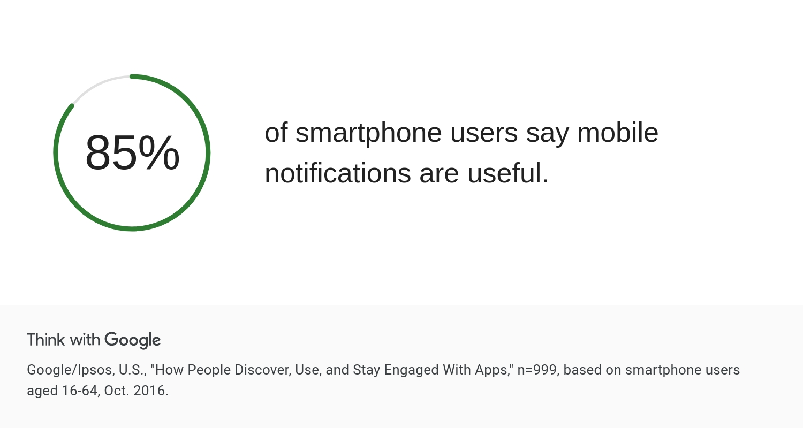

Progressive web apps combine the best features of traditional websites and platform-specific apps
Native apps
Developed for a specific operating system
Distributed using the vendor's app store
Easy for users to access
Offline and background operation
Dedicated UI
OS integration
App store integration
Traditional websites
Less like "something the user has" and more like "somewhere the user visits"
Single codebase
Distribution via the web
PWA Advantages
Native-like experience
PWAs have their own application icons that can be added to a device's home screen or task bar
PWAs can be launched automatically when an associated file type is opened
PWAs can be submitted to application stores
PWAs can continue working when the device is offline
PWAs support push notifications
PWAs can perform periodic updates even when the application is not running
PWAs can access hardware features
Web-related advantages
PWAs can be indexed by search engines
PWAs can be shared and launched from a standard web link
PWAs are safe for users because they use secure HTTPS endpoints and other user safeguards
PWAs adapt to the user's screen size or orientation, and input method
PWAs can use advanced web APIs such as WebBluetooth, WebUSB, WebPayment, WebAuthn, or WebAssembly
Other advantages
Cross-platform compatibility
Small app weight
Low entry level
PWA Disadvantages
Decentralization
Dependence on browsers
Technical features of PWAs
Browser and PWA

Web App Manifest
Service worker
PWAs and SPAs
How PWAs can drive business success





Pinterest case study
Core engagement increased by 60%, also they saw a 44% increase in user-generated ad revenue and time spent on their mobile site has increased by 40%
Uber case study
Uber PWA was designed to fast even on 2G.
The core app is only 50kb and takes less than 3s to load
Trivago case study
Increase of 150% of people who add Trivago PWA to home screen, 97% increase in clickouts to hotel offers, 67% of users continue to browse site when they come back online